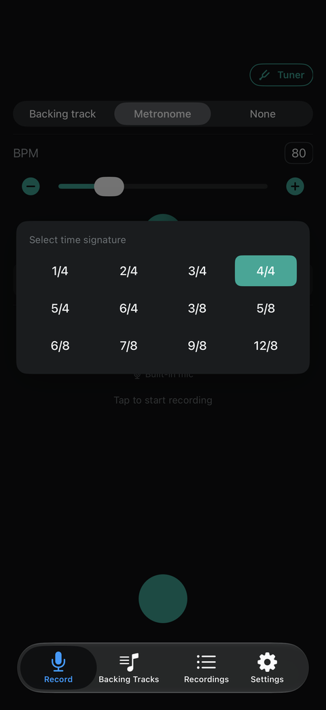
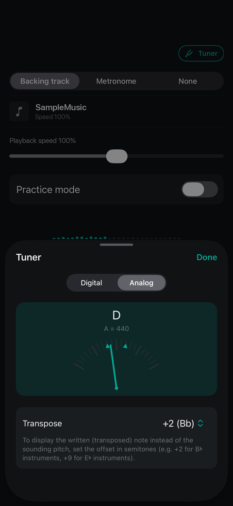
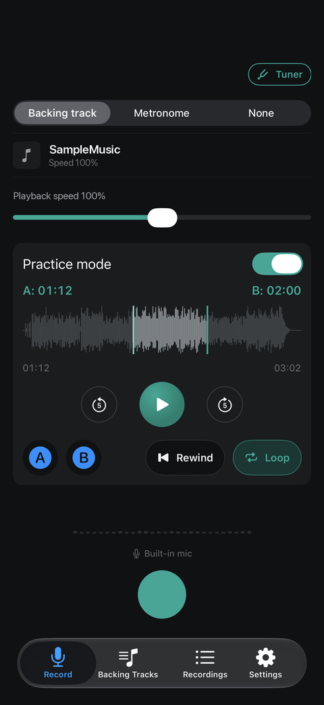
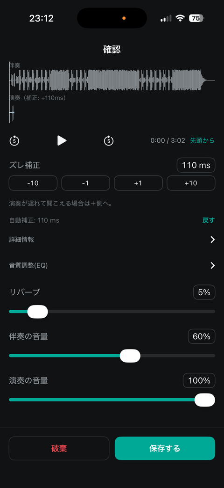
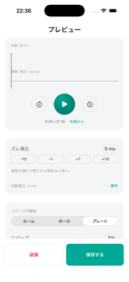
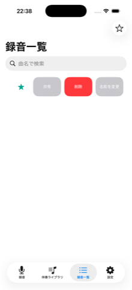
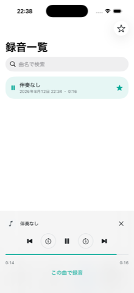
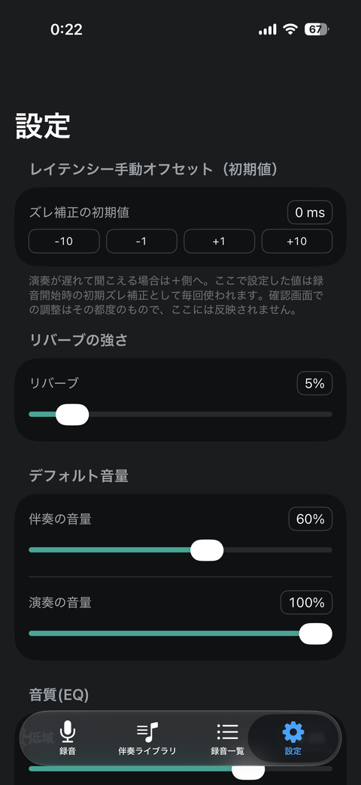
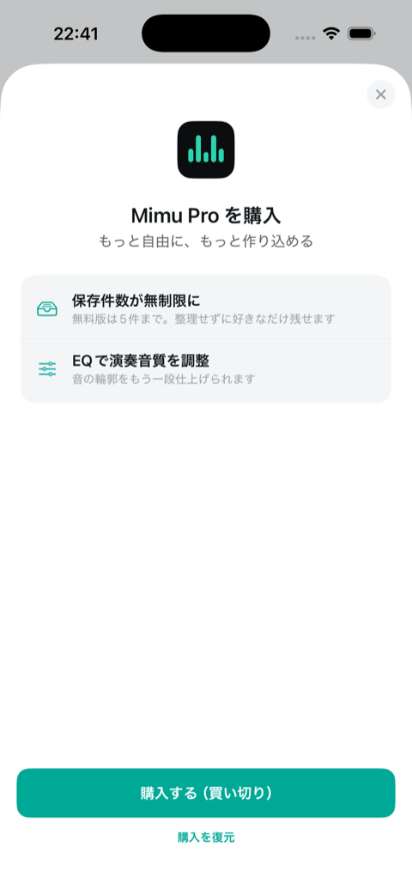

User Guide
Last updated: October 31, 2026
Mimu helps you practice an instrument by recording yourself, listening back, and refining your performance. Use the four tabs at the bottom of the screen — Record, Accompaniment Library, List, and Settings — to build your practice routine.
1Recording
The "Record" tab lets you choose from three backing modes.
- Accompaniment: pick a track and adjust its playback speed while you record along with it (Apple Music songs work too — see section 4)
- Metronome: set a BPM and time signature (a wide range from 1/4 to 12/8 is supported) and record along with a click track. Use "Play Preview" to hear it before you start
- None: record just your performance, with no backing track
The active microphone (such as the built-in mic) is shown at the bottom of the screen. Tap the round button to start recording. Mimu records with your device's built-in mic, so we recommend listening to the backing track or metronome through earphones (if you start recording without earphones connected, Mimu shows a reminder — check "Don't show this again" to hide it from then on).
When an external mic is connected: when you connect a wired external mic (earphones with a mic, a USB-C mic, etc.), Mimu shows a sheet on the recording screen asking which mic to record with (if you connect it while on another tab or with the app in the background, the sheet appears when you return to the recording screen). "Built-in mic (recommended)" is the default, and closing the sheet also keeps the built-in mic (it has better quality than earphone mics). Choose "Use the external mic" to record with it. On the recording screen, while an external mic is connected you can switch between "Built-in mic / External mic" with one tap, and the connected device's name is shown below (you can't switch while recording). If you plug or unplug a device while recording, recording stops and you can choose to "Save" or "Discard" what was recorded so far. Bluetooth earphone mics are not used for recording.
Tuner: tap the "Tuner" button at the top right to open it. It detects the pitch of your playing and shows it as a note name (like "C" or "E"), referenced to A = 440Hz. You can switch between digital and analog display and set the transposition here (to show written notes, e.g. +2 for B♭ instruments, +9 for E♭ instruments). Tap "Done" when you've finished tuning.
Practice mode: when you pick a track in Accompaniment mode, a toggle appears — turn it on to show a waveform where you can set point A and point B, then loop that section while you practice. Drag the handles on the thick bar to move the range — Mimu remembers it for each song. You can also jump forward/back 5 seconds, or tap "Rewind" to go back to point A (or the start of the track if A isn't set).



2Reviewing Your Take
Once you stop recording, you'll land on the review screen.
- Both the "Accompaniment" and "Performance" waveforms are shown so you can compare them visually
- Play back your take with 5-second skip controls
- Timing correction: fine-tune the offset between the accompaniment and your recording, starting from an auto-detected value and adjusting manually in -10/-1/+1/+10 ms steps. If your performance sounds delayed, adjust toward +. Tap "Revert" to go back to the auto-detected value
- Details: view deeper technical info, including output/input latency, manual offset, TimePitch delay, and playback rate
- EQ: adjust low, mid, and high bands independently. If a recording sounds muffled, try lowering the low band or boosting the high band for more clarity (EQ requires Mimu Pro)
- Reverb: pick a type (Room/Hall/Plate) from the segmented control and adjust the intensity with the slider. You can also adjust accompaniment volume and performance volume on this screen
- Tap "Save" to keep the take, or "Discard" to try again


3Accompaniment Library
Add and manage your own accompaniment tracks here.
- Organized into three sub-tabs: "Albums," "Playlists," and "All Songs." Every sub-tab is searchable
- Use the filters at the top ("All," "Files," "Music Library," "Apple Music") to show songs by where they came from
- In "All Songs," use the button at the top left to choose a sort order: "Date Added (Newest First)," "Date Added (Oldest First)," "Title (A–Z)," or "Title (Z–A)." Your choice is remembered
- Tap + at the top right to add songs: "From Files" imports audio from your device's Files app (MP4 files are supported for audio-only import; files that contain video cannot be imported), "From Music Library" adds songs from the Music app (with their artwork), and "Find on Apple Music" adds Apple Music songs (see section 4)
- If an import fails, the reason is shown — such as DRM protection, an iCloud file that hasn't been downloaded, or a general read failure
- Swipe a song left to delete it. Removing an Apple Music song only takes it out of your accompaniment library — nothing changes in Apple Music (you can turn off the confirmation in Settings)
4Practicing and Recording with Apple Music Songs
You can practice and record with Apple Music songs as your backing track.
- In the accompaniment library, tap + and choose "Find on Apple Music," then search by song title or artist to add songs. Tap "Record with this song" to show the song on the recording screen
- Searching, adding songs, and 30-second previews work without an Apple Music subscription. Playing a song as your backing track (practice, recording, and listening back) requires an Apple Music subscription
- Just like audio files, you can change the playback speed and use Practice mode (A–B range). When recording, you can play the A–B range once or repeat it with "Loop"
- Only your own performance is saved — never the song itself. Exporting and sharing also include your performance only
- If the song stops while you're recording, recording stops too, and you can choose to keep or discard what you've recorded so far. When the song plays to the end, recording stops automatically
- Transposition, EQ, and reverb don't apply to the Apple Music song itself (they still apply to your own performance)
5Recording List
Browse and play back all your saved recordings — useful for reviewing your practice history over time.
- While something is playing, a mini player stays docked at the bottom of the screen, even if you switch tabs. It shows elapsed/total time and has 5-second skip controls. Tap the zoom button to show a larger waveform you can pinch and drag to check details while it plays
- Tap the star on any row to mark it as a favorite, and use the star button in the navigation bar to filter to favorites only
- Swipe a row left to reveal "Rename," "Delete," and "Share"
- While a recording is playing, tap "Record With This Track" to use it as the backing track for your next recording
- Recordings made with Apple Music songs play back together with the original Apple Music song in the recording list, mini player, zoomed waveform, and review screen (it may take a moment to start after you tap play). Tap "With original" to switch to "My sound only." If you don't have an Apple Music subscription or the original can't be played, Mimu shows the reason and plays your own sound only


6Settings
Set default values for the adjustments you make on the review screen, so you don't have to tweak them every time.
- Default timing correction (0 ms by default, adjustable in -10/-1/+1/+10 ms steps). This value is applied as the starting offset for your next recording — adjustments made on the review screen are one-off and aren't saved here
- Default reverb level
- Default volume levels (accompaniment and performance)
- Default EQ settings (low, mid, and high bands, Mimu Pro only)

7Mimu Pro
The free tier limits you to saving 5 recordings, and EQ isn't available. Upgrading to Mimu Pro removes that limit and unlocks EQ (low, mid, and high bands). Recordings made with Apple Music songs also count toward the limit. It's a one-time purchase, not a subscription. You can buy or restore it from the "Upgrade to Mimu Pro" button at the top of the Settings tab.

8Contact
If you notice anything confusing about how the app works, or run into a bug, please reach out.
✉️ Send Feedback